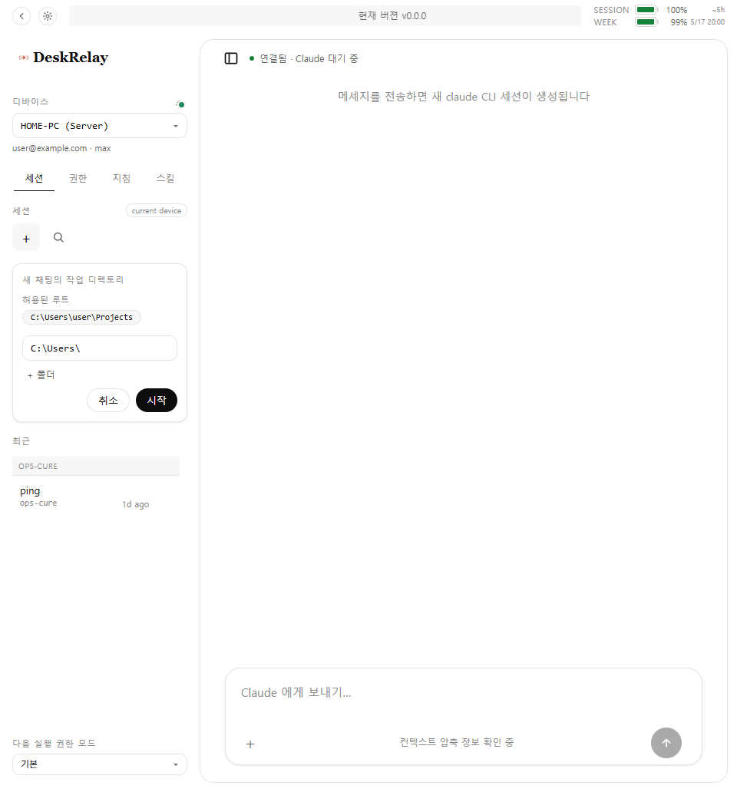

Source
This page was rebuilt from the public GitHub repository only: README, docs/MANUAL.md, package metadata, and manual screenshots.
Based on the public GitHub README, DeskRelay is a self-host development tool for controlling Claude Code running on your own PC from a browser. One server PC runs site-frontend, site-backend, and a local connector daemon; other PCs on the same LAN or Tailscale tailnet can be registered as devices.
This page was rebuilt from the public GitHub repository only: README, docs/MANUAL.md, package metadata, and manual screenshots.
Agent work is most useful on a machine with the user's repo, shell, and tokens. But that also pins the workflow to one keyboard.
Start a server PC, open the browser UI, then copy the “register another PC” command from the main screen into the controlled Windows PC.
The repository is at v0.0.0. README covers install, access URL and token, other-PC registration, usage, update, stop/uninstall, and troubleshooting.
The old portfolio images were removed from this case study. The gallery now uses only manual screenshots committed under docs/assets/screenshots in the public GitHub repository.
Source: darkhtk/deskrelay GitHub README and docs/MANUAL.md.




The site should feel like a product, but the sensitive execution surface stays on the user's PC.
README architecture. The server PC and registered PCs each run connector daemons that control their local Claude Code CLI.
Frontend. Package metadata describes @deskrelay/site-frontend as a Solid + Vite SPA, while @deskrelay/mobile-app is a Capacitor wrapper.
Backend. @deskrelay/site-backend is a self-host Hono/Bun backend that connects the browser to user-registered connector daemon URLs.
Connector. @deskrelay/pc-connector-daemon is a self-host connector daemon exposing local Claude Code behaviors over a private HTTP API.
Behavior. @deskrelay/behavior-remote-claude runs the claude CLI on the user's PC and streams stream-json output as kernel events.
The README treats server install, access URL and token, other-PC registration, verification reports, updates, and troubleshooting as one operator flow.
Run the Windows PowerShell or macOS Terminal install script. After install, the default browser opens http://127.0.0.1:18193.
Paste the command from the main screen into the controlled Windows PC. It handles repo install/update, connector startup, Tailscale/LAN address detection, server reachability validation, and device registration.
Choose a PC from the left device dropdown, start a new chat with a workspace directory, and inspect the current Claude environment through permissions and skills tabs.
The README explicitly says not to expose connector ports directly to the public internet. For outside access, it recommends a private network such as Tailscale; other-PC registration requires the same LAN or the same Tailscale tailnet.
Troubleshooting follows that boundary: check the server URL, same LAN/Tailscale, target PC port 18091, firewall rules, registration report, and connector verification report.
DeskRelay sits beside Ops-Cure: one kernel-first, one product-first, both centered on local agent runtimes that need product-grade control surfaces.